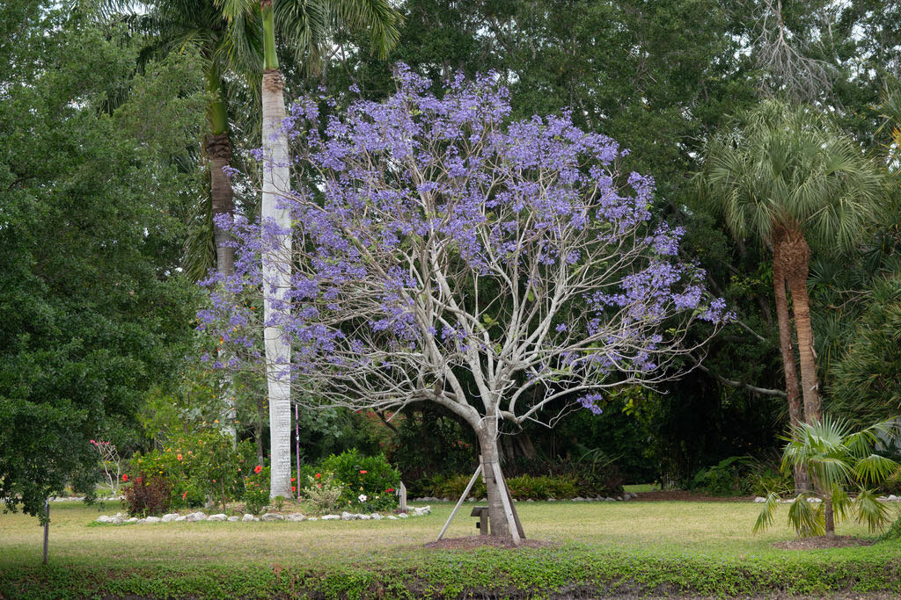

- When a Jacaranda blooms, it doesn't hold anything back — the entire canopy goes purple-blue before a single leaf appears, creating one of the most theatrical flowering displays in the botanical world.
- Native to northwestern Argentina and Bolivia, it's now planted on every continent where frost doesn't kill it.
- The wood is fine-grained and useful: historically harvested for furniture, musical instruments, and cabinetry.
- In South Africa whole streets bloom simultaneously each spring — an event entire cities plan around.
Native to the dry inter-Andean valleys and piedmont forests of northwestern Argentina and southern Bolivia. Sources differ on whether southern Brazil, Uruguay, and Paraguay are part of the native range — Kew's Plants of the World Online lists only Bolivia to NW Argentina, while other references include a broader South American range.
The discrepancy likely reflects a long cultivation history obscuring original wild boundaries.
One of the most celebrated flowering trees in the world — planted on streets, in parks, and in gardens across every tropical and subtropical continent. Widely naturalized in South Africa, Australia, Spain, and throughout the Americas.
Listed as Vulnerable by the IUCN in its native wild range, threatened by logging and agricultural clearing — even as millions of specimens flourish in cultivation worldwide.
The name Jacaranda comes from a Guaraní word meaning 'fragrant.'
- The Blue Jacaranda is arguably the most widely planted ornamental tree on earth — entire cities are famous for their Jacaranda seasons. Pretoria, South Africa is called the Jacaranda City for its 70,000 street trees. Grafton, Australia holds an annual Jacaranda Festival. In Lisbon, Portugal the trees line entire boulevards.
- In all these places the tree is a beloved non-native that arrived from South America and never left.
- The flowering is triggered partly by mild cold stress — meaning Bradenton's occasional cool winters may actually improve the bloom. Flowering is also reportedly best in poor soil: a well-fertilized, well-watered Jacaranda puts energy into leaves, not flowers.
- Here's the conservation paradox: the Blue Jacaranda is listed as Vulnerable on the IUCN Red List in its native Argentine and Bolivian range, threatened by logging and agricultural clearing — yet it is simultaneously one of the most abundant ornamental trees on earth. Millions of cultivated specimens flourish globally while the wild population quietly declines.
- Older botanical sources may list this tree as Jacaranda acutifolia — now considered a synonym, or in some modern treatments a distinct Peruvian species. All cultivated Jacarandas are believed to derive from Argentine stock and are correctly called J. mimosifolia.
- In Pretoria, planting new Jacarandas is now forbidden due to invasive concerns — yet removing the beloved adult trees proved politically impossible. The Jacaranda City will eventually lose its trees to old age with no replacements allowed.
When the Jacaranda erupts in lavender, it becomes a pollinator magnet — its long tubular flowers are built for large bees, especially carpenter bees, and also draw butterflies and hummingbirds to their nectar. The blanket of fallen blossoms feeds insects at ground level, and decomposing flowers and leaves cycle nutrients back into the soil beneath the canopy.
Its broad, fern-like canopy provides birds with shade, perches, and nesting cover. The persistent woody seed pods offer food for seed-eating birds through summer and fall.
By seed and softwood cuttings — grafted trees are preferred in cultivation because seedlings can take many years to bloom and may not reproduce true to type.
Dense terminal clusters of lavender-blue, lightly fragrant, trumpet-shaped flowers up to 2 inches long, appearing primarily April through August, most often in May in the Tampa Bay area. The canopy can be entirely purple-blue before a single leaf opens.
Flat, woody, brown seed pods about 2 inches across, persisting on the tree long after seeds are shed — a reliable ID feature year-round.
Finely divided, feathery, bipinnate compound leaves resembling a giant fern frond. Medium green, casting light filtered shade. Deciduous in cooler winters.
Light gray, smooth when young, becoming finely scaly with age. Trunks often bent or arching — a characteristic growth form.
The feathery fern-like foliage is distinctive most of the year. In spring, watch for the spectacular purple-blue bloom that often precedes the leaves entirely. Flat woody seed pods persist through summer and fall. The light gray arching trunk is recognizable year-round.
This isn't a food plant, but it has no harmful properties either — no known toxicity to people, dogs, or cats.


- © Rob Carr (CC-BY-NC), via iNaturalist
- © Sherry Nigro (CC-BY-NC), via iNaturalist